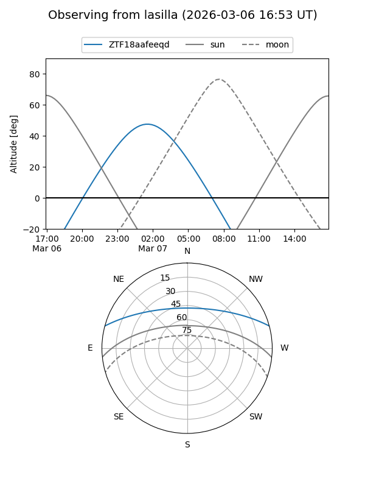
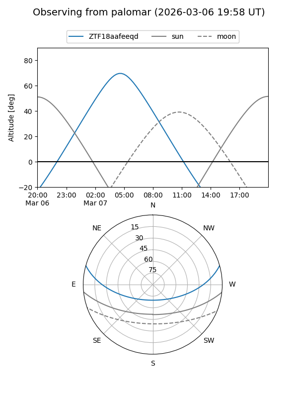

ZTF18aafeeqd
Target ZTF18aafeeqd at 2026-03-07 06:04
Aliases and brokers:
FINK: link
Lasair: link
ALeRCE: link
alt names
ZTF18aafeeqd (ztf,fink_ztf)
Coordinates:
equatorial (ra, dec) = 116.7430,+13.20782
equatorial (HMS+DMS) = 07:46:58.33,+13:12:28.14
galactic (l, b) = (207.0822,+18.18511)
Flags:
Photometry:
last ztfg=19.63
1 ztfg detections
Lightcurve
Visibility


Additional plots